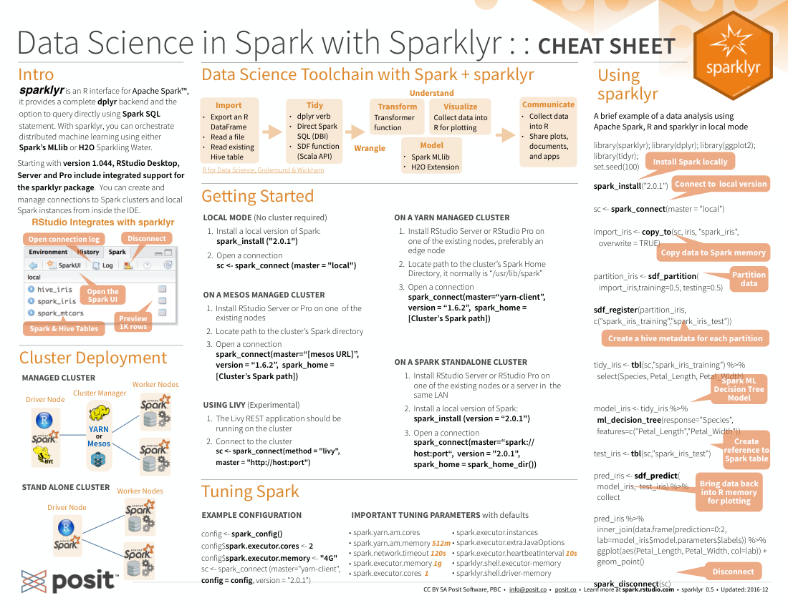
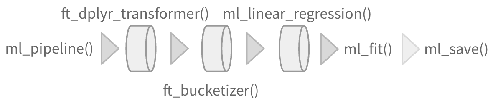

Download PDF
Translations (PDF)
Supported in Databricks Connect v2
Open your .Renviron file: usethis::edit_r_environ()
In the .Renviron file add your Databricks Host Url and Token (PAT):
DATABRICKS_HOST = \[Your Host URL\]DATABRICKS_TOKEN = \[Your PAT\]Install extension: install.packages("pysparklyr")
Open connection:
sc <- spark_connect(
cluster_id = "[Your cluster’s ID]",
method = "databricks_connect"
)Install RStudio Server on one of the existing nodes or a server in the same LAN
Open a connection
spark_connect(
master="spark://host:port",
version = "3.2",
spark_home = [path to Spark]
)Install RStudio Server on an edge node
Locate path to the clusterʼs Spark Home Directory, it normally is "/usr/lib/spark"
Basic configuration example
conf <- spark_config()
conf$spark.executor.memory <- "300M"
conf$spark.executor.cores <- 2
conf$spark.executor.instances <- 3
conf$spark.dynamicAllocation.enabled<-"false"sc <- spark_connect(
master = "yarn",
spark_home = "/usr/lib/spark/",
version = "2.1.0", config = conf
)Make sure to have copies of the yarn-site.xml and hive-site.xml files in the RStudio Server
Point environment variables to the correct paths
Sys.setenv(JAVA_HOME="[Path]")
Sys.setenv(SPARK_HOME ="[Path]")
Sys.setenv(YARN_CONF_DIR ="[Path]")sc <- spark_connect(master = "yarn-cluster")Use the following to obtain the Host and Port system2("kubectl", "cluster-info")
Open a connection
sc <- spark_connect(
config = spark_config_kubernetes(
"k8s://https://[HOST]>:[PORT]",
account = "default",
image = "docker.io/owner/repo:version"
)
)No cluster required. Use for learning purposes only
Install a local version of Spark: spark_install()
Open a connection
sc <- spark_connect(master="local") Azure - spark_connect(method = "synapse")
Qubole - spark_connect(method = "qubole")


Import data into Spark, not R
Arguments that apply to all functions:
sc, name, path, options=list(), repartition=0, memory=TRUE, overwrite=TRUE
spark_read_csv(header = TRUE, columns = NULL, infer_schema = TRUE, delimiter = ",", quote= "\"", escape = "\\", charset = "UTF-8", null_value = NULL)spark_read_json()spark_read_parquet()spark_read_text()spark_read_delta()dplyr::tbl(scr, ...) - Creates a reference to the table without loading its data into memory
dbplyr::in_catalog() - Enables a three part table address
x <- tbl(sc,in_catalog("catalog", "schema", "table"))Supported in Databricks Connect v2
dplyr::copy_to(dest, df, name)Apache Arrow accelerates data transfer between R and Spark. To use, simply load the library
library(sparklyr)
library(arrow)Supported in Databricks Connect v2
Translates into Spark SQL statements
copy_to(sc, mtcars) |>
mutate(trm = ifelse(am == 0, "auto", "man")) |>
group_by(trm) |>
summarise_all(mean)pivot_longer() - Collapse several columns into two. (Supported in Databricks Connect v2)
pivot_wider() - Expand two columns into several. (Supported in Databricks Connect v2)
nest() / unnest() - Convert groups of cells into list-columns, and vice versa.
unite() / separate() - Split a single column into several columns, and vice versa.
fill() - Fill NA with the previous value.
ft_binarizer() - Assigned values based on thresholdft_bucketizer() - Numeric column to discretized columnft_count_vectorizer() - Extracts a vocabulary from documentft_discrete_cosine_transform() - 1D discrete cosine transform of a real vectorft_elementwise_product() - Element- wise product between 2 colsft_hashing_tf() - Maps a sequence of terms to their term frequencies using the hashing trick.ft_idf() - Compute the Inverse Document Frequency (IDF) given a collection of documents.ft_imputer() - Imputation estimator for completing missing values, uses the mean or the median of the columns.ft_index_to_string() - Index labels back to label as stringsft_interaction() - Takes in Double and Vector columns and outputs a flattened vector of their feature interactions.ft_max_abs_scaler() - Rescale each feature individually to range [-1, 1] (Supported in Databricks Connect v2)ft_min_max_scaler() - Rescale each feature to a common range [min, max] linearlyft_ngram() - Converts the input array of strings into an array of n-gramsft_bucketed_random_projection_lsh()ft_minhash_lsh() - Locality Sensitive Hashing functions for Euclidean distance and Jaccard distance (MinHash)ft_normalizer() - Normalize a vector to have unit norm using the given p-normft_one_hot_encoder() - Continuous to binary vectorsft_pca() - Project vectors to a lower dimensional space of top k principal componentsft_quantile_discretizer() - Continuous to binned categorical values.ft_regex_tokenizer() - Extracts tokens either by using the provided regex pattern to split the textft_robust_scaler() - Removes the median and scales according to standard scaleft_standard_scaler() - Removes the mean and scaling to unit variance using column summary statistics (Supported in Databricks Connect v2)ft_stop_words_remover() - Filters out stop words from inputft_string_indexer() - Column of labels into a column of label indices.ft_tokenizer() - Converts to lowercase and then splits it by white spacesft_vector_assembler() - Combine vectors into single row-vectorft_vector_indexer() - Indexing categorical feature columns in a dataset of Vectorft_vector_slicer() - Takes a feature vector and outputs a new feature vector with a subarray of the original featuresft_word2vec() - Word2Vec transforms a word into a codeSupported in Databricks Connect v2
copy_to(sc, mtcars) |>
group_by(cyl) |>
summarise(mpg_m = mean(mpg)) |> # Summarize in Spark
collect() |> # Collect results in R
ggplot() +
geom_col(aes(cyl, mpg_m)) # Create plotml_linear_regression() - Linear regression.ml_aft_survival_regression() - Parametric survival regression model named accelerated failure time (AFT) model.ml_generalized_linear_regression() - GLM.ml_isotonic_regression() - Uses parallelized pool adjacent violators algorithm.ml_random_forest_regressor() - Regression using random forests.ml_linear_svc() - Classification using linear support vector machines.ml_logistic_regression() - Logistic regression. (Supported in Databricks Connect v2)ml_multilayer_perceptron_classifier() - Based on the Multilayer Perceptron.ml_naive_bayes() - It supports Multinomial NB which can handle finitely supported discrete data.ml_one_vs_rest() - Reduction of Multiclass, performs reduction using one against all strategy.ml_decision_tree_classifier(), ml_decision_tree(), `ml_decision_tree_regressor(). - Classification and regression using decision trees.ml_gbt_classifier(), ml_gradient_boosted_trees(), ml_gbt_regressor() - Binary classification and regression using gradient boosted trees.ml_random_forest_classifier() - Classification and regression using random forests.ml_feature_importances(), ml_tree_feature_importance() - Feature Importance for Tree Models.ml_bisecting_kmeans() - A bisecting k-means algorithm based on the paper.ml_lda(), ml_describe_topics(), ml_log_likelihood(), ml_log_perplexity(), ml_topics_matrix() - LDA topic model designed for text documents.ml_gaussian_mixture() - Expectation maximization for multivariate Gaussian Mixture Models (GMMs).ml_kmeans(), ml_compute_cost(), ml_compute_silhouette_measure() - Clustering with support for k-means.ml_power_iteration() - For clustering vertices of a graph given pairwise similarities as edge properties.ml_als(), ml_recommend() - Recommendation using Alternating Least Squares matrix factorization.ml_clustering_evaluator() - Evaluator for clustering.ml_evaluate() - Compute performance metrics.ml_binary_classification_evaluator(), ml_binary_classification_eval(), ml_classification_eval() - A set of functions to calculate performance metrics for prediction models.ml_fpgrowth(), ml_association_rules(), ml_freq_itemsets() - A parallel FP-growth algorithm to mine frequent itemsets.ml_freq_seq_patterns(), ml_prefixspan() - PrefixSpan algorithm for mining frequent itemsets.ml_summary() - Extracts a metric from the summary object of a Spark ML model.ml_corr() - Compute correlation matrix.ml_chisquare_test(x,features,label) - Pearson’s independence test for every feature against the label.ml_default_stop_words() - Loads the default stop words for the given language.ml_call_constructor() - Identifies the associated sparklyr ML constructor for the JVM.ml_model_data() - Extracts data associated with a Spark ML model.ml_standardize_formula() - Generates a formula string from user inputs.ml_uid() - Extracts the UID of an ML object.Easily create a formal Spark Pipeline models using R. Save the Pipeline in native Sacala. It will have no dependencies on R.
Supported in Databricks Connect v2
ml_pipeline() - Initializes a new Spark Pipeline.ml_fit() - Trains the model, outputs a Spark Pipeline Model.Supported in Databricks Connect v2
ml_save() - Saves into a format that can be read by Scala and PySpark.ml_read() - Reads Spark object into sparklyr.
Supported in Databricks Connect v2
Run arbitrary R code at scale inside your cluster with spark_apply(). Useful when there you need functionality only available in R, and to solve ‘embarrassingly parallel problems’.
spark_apply(
x, f,
columns = NULL, memory = TRUE, group_by = NULL,
name = NULL, barrier = NULL, fetch_result_as_sdf = TRUE
)copy_to(sc, mtcars) |>
spark_apply(
nrow, # R only function
group_by = "am",
columns = "am double, x long"
)CC BY SA Posit Software, PBC • info@posit.co • posit.co
Learn more at spark.posit.co and therinspark.com.
Updated: 2024-06.
packageVersion("sparklyr")[1] '1.8.6'